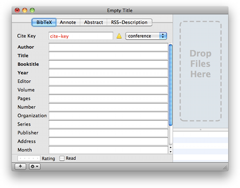

Editing References Editing References
Editing References Editing ReferencesOnce references have been added to the bibliography, they can be edited by selecting a reference and choosing "Get Info" from the "File" menu, typing ⌘I , or double-clicking the reference.
This opens the Editor window, which looks something like this:

You can then fill in the appropriate fields for your reference. The type pop-up menu lets you choose from the canonical BibTeX publication types (e.g., article, book, phdthesis). Field titles highlighted in red represent required fields for the chosen reference type (article in the case of the above screenshot).
Fields can be added with the "+" button in the status bar. You can also add or remove field using the appropriate menu item in the action pop-up menu in the status bar (the button with the little gear icon.) You can also change the name of any custom field using the action menu. This can also be done by double-clicking the field name. Note that this is not allowed for standard fields. Also, BibDesk verifies that cite keys are unique before committing a reference to the bibliography.
When editing, you can use a key sequence (⌥
-esc) to pop up a list
of similar items in your bibliography for autocompletion, just as you
can elsewhere in Mac OS X. On some laptop keyboard layouts you may need to use
fn-F5, or if you have changed your key bindings, make sure the complete:
command is bound.
When editing, changing pub type never loses information. In other words, if you put a booktitle in when it was inproceedings, and you change it to phdthesis, it will still have that booktitle.
You can view a linked file in its appropriate application by double-clicking its icon. Alternately, you can preview the file by control-clicking on the icon and choosing "Quick Look".
Control-clicking in the file icon pane (region marked "Drop Files Here") will give more options for adding and viewing files or URLs.
You can also add any file or URL field by dragging a web it to the file icon pane.
The "Annote" and "Abstract" tabs provide access to larger text areas for these types of information. Rss-Description is covered in Default Fields.
| Entering Accented Characters | ||
| Editing Fields with Macros | ||
| Editing a Document's Macro Definitions | ||
| Creating and Editing Crossrefs |